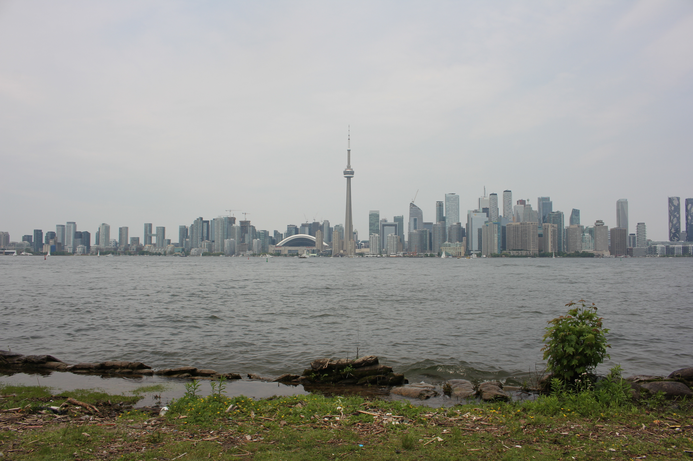

Hi, I'm Ruth. I'm learning web development in the heart of Toronto!
I'm a graduating Business Management student with a strong commitment to community service. My background includes a decade of experience spanning various industries, from overseeing a startup online grocery team to optimizing a small restaurant business and assisting in managing a family-owned leasing company.
My passion for community and social work is evident through my involvement with organizations dedicated to improving the lives of abused girls and underprivileged children in Cebu, Philippines, as well as my current volunteer role at the Heart and Stroke Foundation and my position as a clerk at Nicholson's NoFrills.
My professional strengths lie in administrative and operations support, customer service, and project management, and I'm known for being dependable, well-organized, and committed to excellence. My ultimate career goal is to work as a Project Manager or join a Management Consultancy firm, where I can contribute to the growth of organizations while continuing to serve my community.